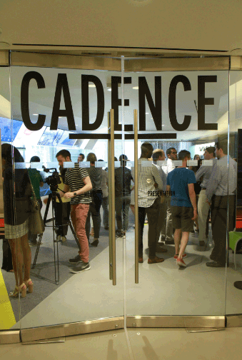
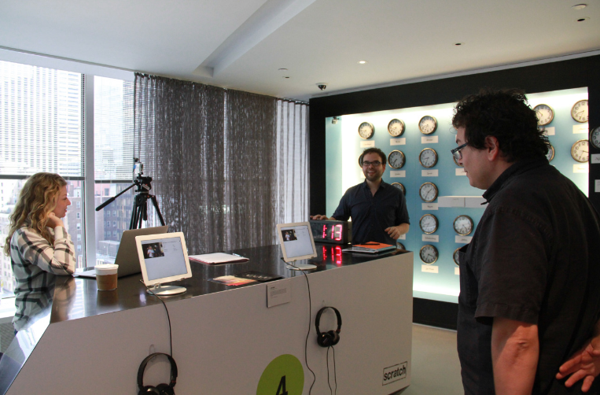
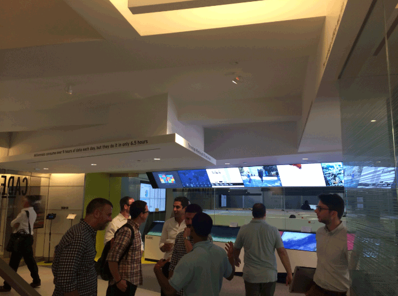
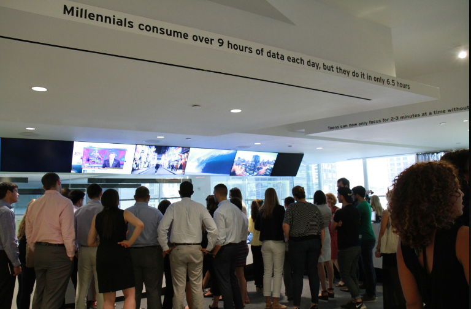

Cadence Installation
Scroll down for project info.
The Cadence Installation was a millennial study conducted by Viacom that we brought to life with an interactive experience. The study was concerned with how we consume more, faster, all the time. We are finding ways to do more, say more, be in more places.
Yet we show signs of a craving for a return to the slow. Slow-food. Slow-drip coffee. Nap pods at work. Mindfulness and out-of-office apps. Deactivation days.
We're calibrating our cadence at every turn. With the Cadence Installation, we sought to deepen our understanding of our audiences and to use that understanding to move culture and guide Viacom's business.

For the interactive installation we took over the 11th floor of Viacom's corporate headquarters at 1515 Broadway, NYC. We set up stations all throughout the floor that highlighted different insights and statistics from the Millennial study.

We invited Viacom staff and corporate partners to experience the study via our interactive installation. Visitors were invited to roam the installation at their own pace or join in one of the guided tours that took place throughout the day.

